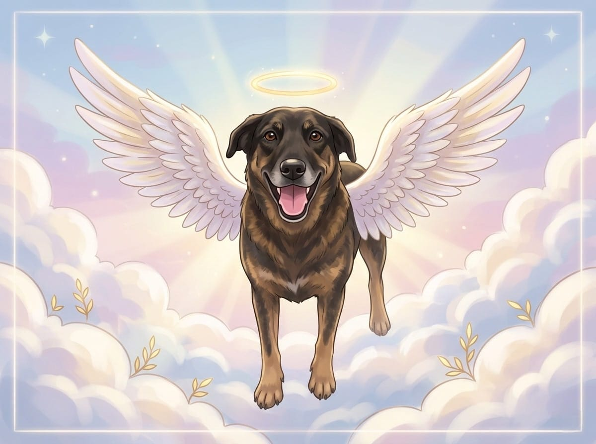

Nossa Missão
Transformando dor em ação e silêncio em voz.
Por que o Voz Animal nasceu?
Este projeto não é apenas um trabalho acadêmico; é uma resposta à urgência de proteger aqueles que não podem se defender sozinhos. A ideia de dar andamento a este portal nasceu da indignação e da esperança de um futuro onde nenhum animal sofra em silêncio.
"A violência contra os animais no Brasil é uma realidade de grande preocupação. Infelizmente, a lei ainda não faz o suficiente, e a nossa única arma é fazer barulho."
O Voz Animal tem o intuito de facilitar e agilizar o processo de denúncia. Acreditamos que, ao simplificar o caminho entre a testemunha e a autoridade, podemos garantir que mais agressores sejam responsabilizados e, o mais importante, que mais vidas sejam salvas antes que seja tarde demais.

Justiça por Orelha
No início de 2026, o Brasil e o mundo pararam diante de um caso que comoveu corações: a trágica partida do cão Orelha. Vítima de uma crueldade injustificável, Orelha tornou-se o símbolo de uma luta que não pode parar.
Dedicamos este projeto à sua memória. Que sua história nos lembre diariamente de que a omissão é uma forma de conivência. A morte de Orelha não foi em vão; ela serve como o combustível para que este site ajude a evitar que outros "Orelhas" tenham o mesmo destino.